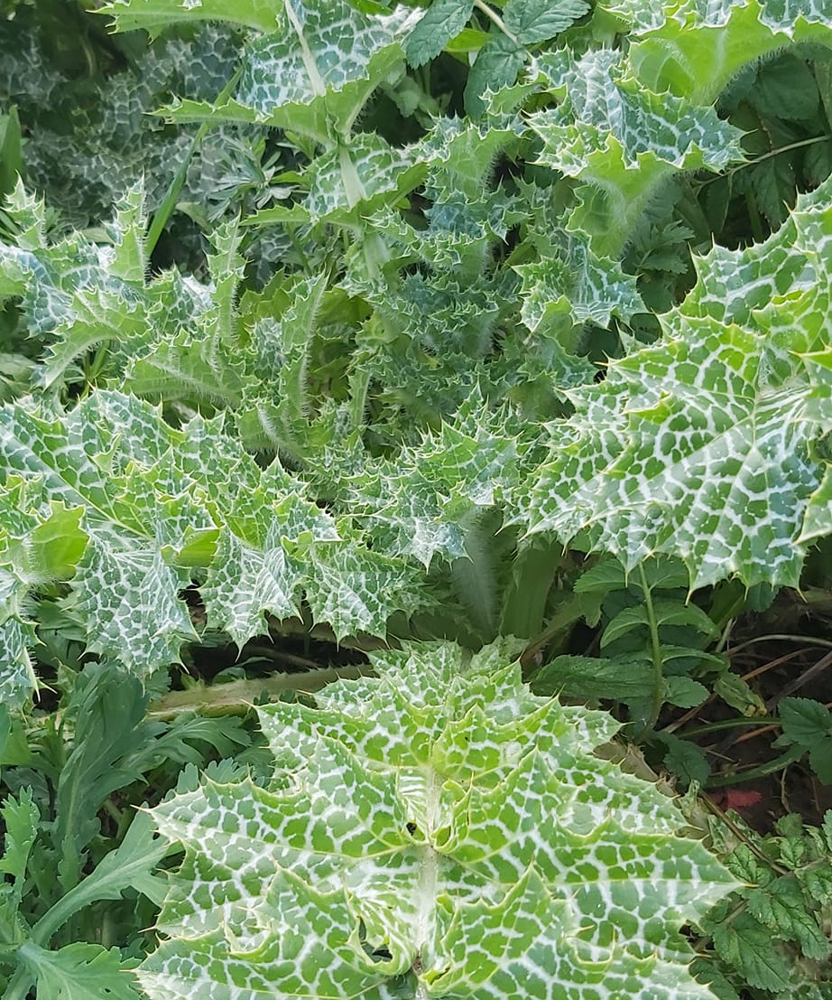

Consiglio
Bisogna fare attenzione alle spine e proteggere le mani con guanti pesanti. Vanno ripuliti dalle spine e dalle fibre, poi messi in acqua e limone (come si fa coi carciofi). Bolliti e ripassati nel pomodoro con aglio o cipolla sono deliziosi: noi ci aggiungiamo anche i funghi cardoncello e talvolta anche l'uovo con pecorino e prezzemolo.
Luisa